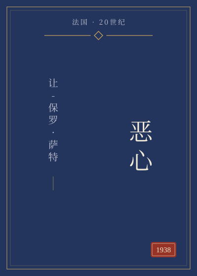
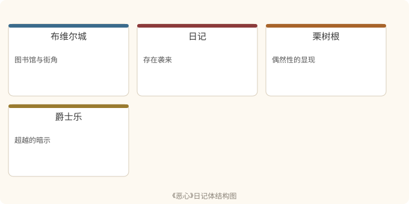

恶心
一、基本信息
| 作者 | 让-保罗·萨特 |
|---|---|
| 成书/出版 | 1938年出版（Britannica：La Nausée (1938; Nausea)） Jean-Paul Sartre — Encyclopaedia Britannica（百科全书） |
| 国别/地区 | 法国 |
| 时代 | 现当代 · 20世纪 |
| 体裁 | 中长篇小说 |
| 语言 | 法语 |

《恶心》日记体结构图（主题·结构图）
二、创作背景
Britannica：'During his years of teaching in Le Havre, Sartre published La Nausée (1938; Nausea)'（在勒阿弗尔任教期间出版）。
Britannica：该小说源于其哲学信念 'existence precedes essence'（存在先于本质）。
三、内容脉络
日记体：历史学者安东纳·洛根丁在布维尔城的数周（通说）。
『恶心』发作：一块石头、一张脸、一只手——存在之偶然性袭来（通说）。
栗树根一幕：存在的赤裸显现（通说）。
四、主要人物表
| 人物 | 身份 | 说明 |
|---|---|---|
| 洛根丁 | 历史学者 | 日记作者（通说） |
| 自学者 | 图书馆员 | 按字母读遍全馆的人 |
| 安妮 | 旧情人 | 『圆满时刻』的幻灭者 |
五、主题与艺术特点
- 存在的偶然与多余：contingency（通说）。
- 自由：'Man is condemned to be free'（人是被判处自由的——Britannica）。
- 写作与超越：从恶心走向爵士乐的救赎暗示（通说）。
六、影响与评论
- Britannica：1964年获诺贝尔奖并公开拒绝（famously declined the prize）——作家拒绝成为制度。
Jean-Paul Sartre — Encyclopaedia Britannica（百科全书） - Britannica：萨特为20世纪存在主义的旗手（the leading voice of 20th-century existentialism 语境）。
Jean-Paul Sartre — Encyclopaedia Britannica（百科全书）
七、阅读建议
难点
- 哲学日记——先读《存在主义是一种人道主义》铺垫（通说）。
- 『恶心』不是生理而是形而上体验。
- 刘放梧？——不：杜长有译本（中国文学出版社？）信息待核；桂裕芳译本（人民文学？）待核。
- 法文原版（Gallimard，通说待核）。
先本作后《存在与虚无》；对照加缪《局外人》。
八、待核实
- 最初书名《Melancholia》（自梵高同名画说）待核。
- 中译本译者信息待核。
- 栗树根段落原文核对。
本页主要来源
让-保罗·萨特的其他收录作品：恶心